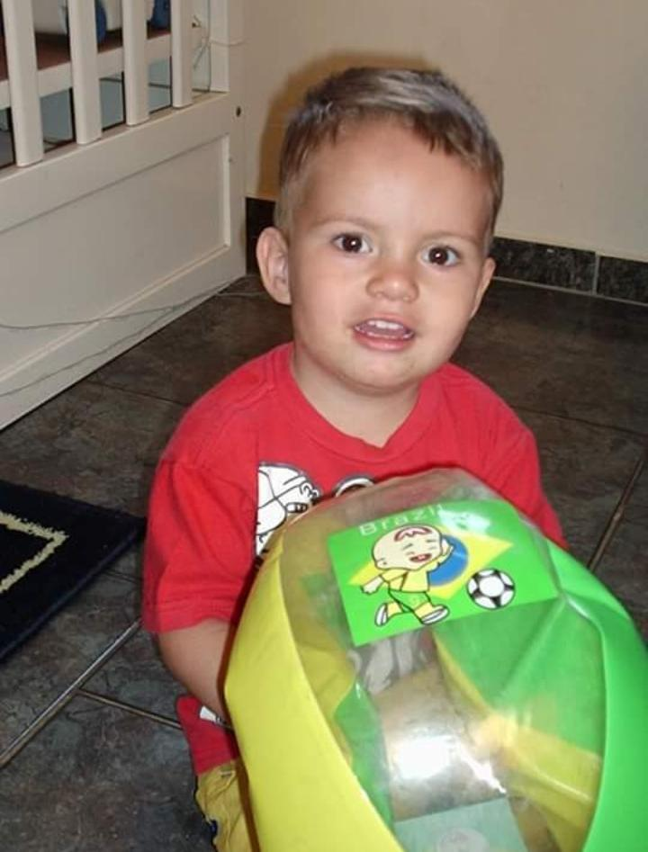
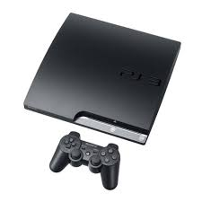
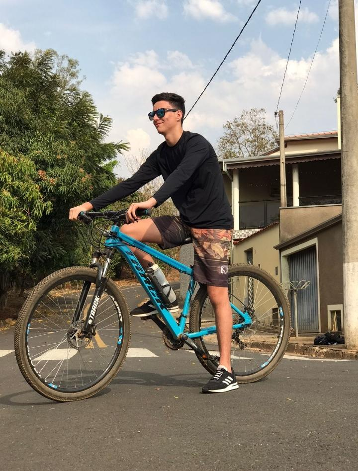

QUAIS SÃO OS MEUS HOBBIES?

- Free Fire: Garena Free Fire é um jogo mobile de tiro no estilo Battle Royale, ou seja, todos contra todos. Disponível para Android e iOS (iPhone), Free Fire coloca até 50 jogadores numa ilha e estes precisam encontrar, rapidamente, armas e equipamentos para tentar sobreviver e eliminar outros jogadores.

- Futebol: Dês de pequeno, gosto muito de praticar esse esporte! O futebol foi o esporte em que eu mais me encontrei, e encontro até hoje, porém com a pandemia eu deixei de praticar esse esporte por questões de cuidado com a COVID19, Entretanto continuei acompanhando pela TV, e joguei bastante FIFA no meu videogame, pretendo voltar a praticar assim que acabar literalmente essa pandemia.

- Video-game: Nas minhas horas vagas, também gosto bastante de jogar jogos no videogame, os que eu mais jogo são: FIFA 18; GTA-V e RAYMAN. jogos que eu ja zerei: Residentivel do 1 ao 7; The Last of Us, Call of Duty, BattleFild entre outos ... Quando vou na casa de meu primo, jogo muito Fortinite, DEstiny 2!

- Ciclismo: Gosto muito de praticar o ciclismo, pratico o ciclismo de maneira prazerosa, e quando estou de cabeça cheia costumo sair de bike para esfriar a cabeça (me acalmar) .
- Música: Também adoro ouvir músicas, quando estou no meu momento de lazer. "Você deve-se perguntar, qual é o gênero musical que eu mais gosto ". Bem eu gosto de muitos, alguns exemplos de gêneros que eu gosto são: Trap, Funk, Rap, Sertanejo, Rock entre outros.
- Clash Royale: Eu joguei bastante o Clash Royale, em minha infância, mas acabei me desapegando e comecei a jogar o Free Fire, até que recentemente deu vontade de voltar a jogar, voltei a jogar (criei outra conta) ha mais ou menos 4 meses.

- Netflix: Gosto muito de assistir filmes e séries, não precisa ser em específico na Netflix mas na Netflix é onde eu mais assisto nos meus momentos de lazer.